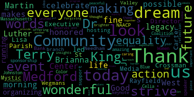

[3gvhm0AovZU_SPEAKER_43]: All right.
[SPEAKER_03]: My check one two All right
[3gvhm0AovZU_SPEAKER_43]: You good?
[mBOS9fhmkww_SPEAKER_00]: How you feeling?
[SPEAKER_01]: You alright? Yeah! My husband is the one who's showing this, and he's not feeling well this morning, so... I'm not mad at him.
[3gvhm0AovZU_SPEAKER_43]: I'm not mad at him.
[SPEAKER_17]: th th th
[SPEAKER_04]: Check, check.
[SPEAKER_06]: Good morning. All right.
[mBOS9fhmkww_SPEAKER_00]: Good morning. What a glorious day we have.
[SPEAKER_04]: All right.
[mBOS9fhmkww_SPEAKER_00]: OK, before I get started, I'm going to do a few things related to housekeeping. There are men's and ladies' rooms on this floor as you go out that door against the wall. OK? Lots of stalls, no waiting. OK? All right. Cell phone etiquette. Right? I know the world that we live in. I live in it too. Okay? We strive for immediacy. We want to make sure that we send pictures to everybody and that whole thing. But today, we're going to live as much as possible in the present. So if you can just silence your cell phones. That would be great. OK. Good morning, friends, family, and neighbors. My name is Terry E. Carter, and I direct elder services and some special programs at the West Medford Community Center. Just want to make sure we're all in the same room. We are extremely grateful to St. Raphael Parish and Father Paul Coughlin for making this spacious function room available to us for today's important proceedings. We are also very appreciative of all that Medford Community Media and station manager Kevin Harrington has done to allow us to broadcast the program on local cable or however that is happening, technical, not my area of expertise. But with Kevin today are Mark Davidson and Jonathan Malerba ably assisting so we will get good pictures. Okay thank you, thank you. Alright now I know a little bit of this has been going on already but Before we get going and in the interest of establishing immediate community beyond our own front doors, please take a minute or two and introduce yourself to one person that you don't know. Okay? One person that you don't know and if this goes off the rails, all right, as it already has, charge it to my head and not to my heart. Today for us, love is the answer.
[SPEAKER_08]: All right.
[mBOS9fhmkww_SPEAKER_00]: OK. All right. That's good.
[SPEAKER_06]: Perfect. Wonderful. Amazing. Everybody get back to your tables.
[SPEAKER_04]: All right. OK. Can you hear me? Can you hear me? OK.
[mBOS9fhmkww_SPEAKER_00]: All right. Okay. Very, very good. That was fun. Let's get this party started. Okay. So. Please allow me to introduce my good friend and fellow pastor Tanner Turley of Medford's Redemption Hill Church, who will offer an invocation for today's gathering. Tanner is an amazing faith leader and leads a dynamic Christian fellowship every Sunday at Medford High's Karen Auditorium.
[SPEAKER_00]: Good morning. Thank you for being here this morning. You remind me of what I listen to this morning. Every MLK Day, I take a moment, usually with my kids, to watch the I Have a Dream speech. But this morning, as I was shoveling snow, can I get an amen? I listened to MLK's last speech in Medford when he said, I've already seen the mountaintop. And I was reminded that that speech took place when there was a storm warning. And at the beginning, he said, you are the kind of people that reveal you have the determination to go on anyway. And so I'm thankful to be in a room where there are individuals that represent a city that's determined to go on anyway. And we have, yes. So we are here to celebrate. We are here to reflect. And I hope if you're like me, you're here to grow. In fact, it might be good to say, I need to grow. Can you say that with me? Can we say we need to grow? We need to grow. And that is true. I grew up as the son of a basketball coach, which meant I got to be in locker rooms that were filled with basketball players of different colors. And I was always comfortable being in rooms and having friendships across racial lines. And I lived under the misconception that I was doing all that I could. But it was several years ago when I started to understand it's one thing to be a racial reconciler. It's a totally different thing to seek to be someone who brings racial justice anywhere and everywhere we can. And so that's what today, that's what today is about. And so I want to pray to Dr. King's God. I want to invite you to join me. And if you belong to another faith expression, feel free to express your faith as you desire. But let's pray together. Father, we thank you for today. God, we thank you for this community. God, we thank you for this opportunity to celebrate and honor one of America's in the world's greatest servant leaders, Dr. Martin Luther King Jr. And as we remember his life, as we celebrate his achievements, as we remember his sacrifice for justice, truly laying down his life, not only day by day, but ultimately, completely for the cause of justice, we ask that you would help each one of us grow just a little bit more to reflect the kind of living that he represented. We need your help, we need your grace, and we thank you for what you will do in this hour. We pray in Jesus' name, amen.
[mBOS9fhmkww_SPEAKER_00]: Okay, and now with words of welcome, may I present the mayor of Medford, my friend, Brianna. Lungo-Koehn, for those of you that are new to the program.
[Lungo-Koehn]: Brianna is fine, thank you. Thank you, Terry. Good morning, everyone. I'm honored to be here today to celebrate Dr. Martin Luther King Jr.' 's life and legacy with you all. Thank you to everyone who makes this wonderful event possible, the West Medford Community Center for organizing and running this event, led by Executive Director Lisa Crossman and Terry Carter, Medford Community Media for being with us today, St. Rayfield's Parish for hosting, and Wegmans, the Mystic Valley branch of the NAACP, and Needham Bank for your support and sponsorship. We also have an amazing keynote speaker with us today, Celia Johnston, Blue of the Massachusetts Women of Color Coalition. Thank you for being here and offering your words and insights. This year's theme, your piece of the dream, is an important idea and deserves our thought and reflection. We all have dreams of a brighter, more peaceful, and united future. We all strive to be more caring, more forgiving, and more empathetic of one another's situations. But making these dreams a reality is harder than it looks. That's why we must look to the past before making our plans for the future. Dr. King's words and actions provide us with a roadmap to equality and equity. And it's up to us to emulate those ideals and put them into action in our lives. So let's strive to do better each day together as a community continuing to reach our goal of equality for all. I look forward to the wonderful program. Thank you for having me and can't wait.
[3gvhm0AovZU_SPEAKER_43]: Thank you.
[mBOS9fhmkww_SPEAKER_00]: Some would suggest that it makes little sense to reinvent the wheels, especially when the car is running good. We already know that Dr. Martin Luther King Jr.' 's leadership in social justice and human rights was born out of his Christian upbringing and his life in the church. Please welcome Medford Treasure Stacy Clayton as she ministers in song with one of Dr. King's favorite traditional hymns. And she will be joined by my friend and my piano player Jonathan Fagan.
[SPEAKER_02]: It's wonderful to be back family.
[SPEAKER_03]: Precious Lord, take my hand. Lead me on. Help me stand. I am tired. I am weak, I am worn. Through the storm, through the night, lead me on to the light. Take my hand. ♪ Precious Lord, lead me home ♪ When my way grows drear ♪ Precious Lord, linger near ♪ When my life is over lest I fall. Take my hand, precious Lord, lead me home. When the darkness appears and the night draws so near, and the day is past and gone, Precious love
[mBOS9fhmkww_SPEAKER_00]: Thank you so much, Daisy. I always call you the soundtrack of Medford, because there's not an occasion or an event that brings us closer together that you don't show up at. So thank you for that. So eminently clear in the leadership and philosophy of Dr. King as a practitioner of nonviolent civil protest was his studied kinship with other global proponents of peaceful protest for social change. Two such global peacemakers were Mahatma Gandhi and Nelson Mandela. All three men shared a legacy of personal sacrifice to the point where all three spent considerable time in prison on account of their beliefs and supporting activities. During their incarcerations, Gandhi, Mandela, and King all wrote prolifically. As we continue with today's proceedings, I will be joined by Medford poet laureate Vijaya Sundaram and the city's director of diversity, Francis Nwaje, as we each present letters written by Mahatma Gandhi, Nelson Mandela, and Dr. King during their incarceration.
[SPEAKER_18]: Oh, I'm sorry.
[SPEAKER_16]: me? I'm honored to be here. Thank you, Terry, for inviting me. It's lovely to be here to read with all of you. August 18, 1932, from Yarrawada Jail to the then Prime Minister of England, Mr. Ramsay MacDonald. fast unto death. Dear friend, there can be no doubt that Sir Samuel Orr has showed you in the cabinet my letter to him of 11th March on the question of the representation of the depressed classes. That letter should be treated as part of this letter and be read together with this. I have read the British government's decision on the representation of the minorities and I have slept over it. In pursuance of my letter to Sir Samuel Rohr and my declaration at the meeting of the Minorities Committee of the Round Table Conference on the 13th November 1931 at St. James's Palace, I have to resist your decision with my life. The only way I can do so is by declaring a perpetual fast unto death, from food of any kind, save water, with or without salt and soda. This fast will cease if, during its progress, the British government, of its own motion or under the pressure of public opinion, revises their decision and their schemes of communal electorates for the depressed classes. whose representatives should be elected by general electorate under common franchise, no matter how wide it is. The proposed fast will come into operation in the ordinary course from the noon of the 20th of September next, unless the said decision is meanwhile revised in the manner suggested above. I am asking the authorities here to cable the text of this letter to you so as to give you ample notice. But in any case, I am leaving sufficient time for this letter to reach you in time by the slowest route. I also ask that this letter and my letter to Sir Samuel Hoare already referred to be published at the earliest possible moment. On my part, I have scrupulously observed the rule of this jail and have communicated my desire or the contents of the two letters to no one save my two companions, Sardar Vallabhai Patel and Sergeant Mahadev Desai. But I want, if you make it possible, public opinion to be affected by my letters, hence my request for their early publication. I regret the decision that I have taken, but as a man of religious faith, bent, But as a man of religious bent that I hold myself to be, I have no other course left open to me. As I have said in my letter to Sir Samuel Hoare, even if His Majesty's government decided to release me in order to save themselves embarrassment, my fast will have to continue. for I cannot now hope to resist the decision by any other means, and I have no desire whatsoever to compass my release by any means other than honorable. It may be that my judgment is warped, and that I'm wholly in error in regarding separate electorates for the depressed classes as harmful to them or Hinduism. If so, I am not likely to be in the right with reference to other parts of my philosophy of life. In that case, my death by fasting will at once be a penance for my error and a lifting of a weight from off those numberless men and women who have a childlike faith in my wisdom. Whereas if my judgment is right, as I have little doubt it is, the contemplated step is but a due fulfillment of the scheme of life which I have tried for more than a quarter of a century, apparently not without considerable success.
[SPEAKER_12]: 6 October 1983, the Commissioner of Prisons, Pretoria. Sir, we have been informed by the local authorities that in accordance with an instruction from prison headquarters, prisoners who are taken to doctors, hospitals, courts, et cetera, will in future be handcuffed and put in leg irons. We are told that this is to be applied to all prisoners, i.e. security prisoners as well as common law prisoners. We wish to make an earnest appeal to you to reconsider your decision relating to security prisoners and allow the present position to continue. During the 20 years that we have spent in prison, there have been numerous changes in our treatment. Previously, we had been handcuffed when we were taken from Robben Island to Cape Town, but for a number of years, this has been discontinued. We welcomed and appreciated the discontinuance as we welcomed all changes that were designed to alleviate the hardships of prison life and make our stay more tolerable. Of special concern to us was the removal of practices which were not only outdated, but which were unnecessarily burdensome and humiliating. While we do not wish to comment on the general security arrangements of the Prisons Department, we nevertheless wish to make some observations in support of our present appeal. One. To the best of our knowledge, during the entire period of our incarceration, there has not been a single instance where a security prisoner has escaped or even attempted to do so while being escorted to Cape Town for medical reasons. Two, for the year and a half that we have been at POSMA, our experience has been that each time any of us was taken out, he was invariably accompanied by four or more warders, some armed. Often the warders were accompanied by a member of security police. Three, this elaborate arrangement has been strictly applied in spite of our advanced ages and physical condition. Four, in our opinion, such arrangements were and still remain quite adequate, and the additional restraints are totally unwarranted, burdensome, and humiliating. This is aggravated by the great deal of attention and curiosity that is aroused among the public at the sight of handcuffed prisoners. Five, we are certain that Robben Island and Palsmo authorities will be able to bear out our contention that security prisoners could not be accused of having abused the medical outings. Six, it has been pointed out to us and recently with greater emphasis that there is no distinction in the treatment of prisoners irrespective of whether they are common law or security prisoners. 7. With respect, sir, may we remind you that this is not strictly in accordance with the factual position. For example, security prisoners are denied the privilege of contact visits. And generally, even though they may be classified as A-groups, they suffer from restrictions in their day-to-day stay. Perhaps more important, security prisoners on the whole are being denied the facilities for remission and parole enjoyed by other prisoners. We believe that the few to whom this dispensation was extended were given remission ranging from a couple of weeks to a few months. Eight, we submit that since differential treatment does in fact exist, there should be no reason why security prisoners should not be exempted from the instructions regarding handcuffs and leg irons. Nine, lastly, from the point of view of health, we consider these new arrangements to be a decided disadvantage. A number of us are suffering from high blood pressure. And it is important that when we are taken to specialists, we should be relaxed and completely free of tension. it is likely that the humiliation and resentment caused by handcuffs will adversely affect our blood pressure. To an extent, therefore, this could be defeating the purpose of us consulting the specialists. We respectfully state that we cannot think of a single valid reason why this new restriction should be applied to us. And we, once again, appeal to you to abandon them. Thank you. Yours faithfully, Nelson Rohilala Mandela.
[mBOS9fhmkww_SPEAKER_00]: excerpted from Reverend Dr. Martin Luther King Jr.' 's letter from the Birmingham jail, April 16, 1963. You may well ask, why direct action? Why sit-ins, marches, and so forth? Isn't negotiation a better path? You are quite right in calling for negotiation. Indeed, this is the very purpose of direct action. Nonviolent, direct action seeks to create such a crisis and fosters such a tension that a community which has constantly refused to negotiate is forced to confront the issue. It seeks to so dramatize the issue that it can no longer be ignored. My citing the creation of tension as part of the work of the Nonviolent Resistor may sound rather shocking, but I must confess that I am not afraid of the word tension. I have earnestly opposed violent tension, but there is a type of constructive nonviolent tension which is necessary for growth. Just as Socrates felt that it was necessary to create tension in the mind so that individuals could rise from the bondage of myths and half-truths to the unfettered realm of creative analysis and objective appraisal, so must we see the need for nonviolent gadflies to create the kind of tension in society that will help men rise from the dark depths of prejudice and racism to the majestic heights of understanding and brotherhood. The purpose of our direct action program is to create a situation so crisis-packed that it will invariably and inevitably open the door to negotiation. I therefore concur with you in your call for negotiation. Too long has our beloved Southland been bogged down in a tragic effort to live in monologue rather than in dialogue. One of the basic points in your statement is that the action that I and my associates have taken in Birmingham is untimely. Some have asked, why didn't you give this new city administration time to act? The only answer that I can give to this query is that the new Birmingham administration must be prodded about as much as the outgoing one before it will act. We are sadly mistaken if we feel that the elevation of Albert Boutwell as mayor will bring the millennium to Birmingham. While Mr. Boutwell is a much more gentle person than Mr. Connor, they are both segregationists. dedicated to the maintenance of the status quo. I have hope that Mr. Boutwell will be reasonable enough to see the futility of massive resistance to desegregation. But he will not see this without the pressure from devotees of civil rights. My friends, I must say to you that we have not made a single gain in civil rights without determined legal and nonviolent pressure. Lamentably, it is an historical fact that the privileged groups seldom give up their privileges voluntarily. Individuals may see the moral light and voluntarily give up their unjust posture, but as Reinhold Niebuhr has reminded us, groups tend to be more immoral than individuals. Justice too long delayed is justice denied. We know through painful experience that freedom is never voluntarily given by the oppressor. It must be demanded by the oppressed. Frankly, I have yet to engage in a direct action campaign that was well timed. In the view of those who have not suffered unduly from the disease of segregation, For years now, I have heard the word wait. It rings in the ear of every Negro with piercing familiarity. This wait has almost always meant never. We must come to see with one of our distinguished jurists that justice too long delayed is justice denied. Okay, live theater has moving parts. Thank you so much Vijaya and Francis. I stand with you in believing that all three civil rights champions changed the world. Their sacrifices are both historic and well documented. Sharing these reflections gives us the opportunity to see Martin Luther King Jr. among his teachers and global contemporaries. As we move forward, I believe that Dr. King would want us to be mindful of the worsening plight of new immigrants to America. It would appear that there could be a dramatic shift in the federal government's response to the desires of many foreign-born travelers that want to become Americans, particularly those that are seeking to come here to escape horrible living conditions, violence, and considerable peril in their countries of origin. So if you will indulge the poet in me to share a bit more, I'm going to have my musical collaborator and the founder of the Medford Jazz Festival, Jonathan Fagan. Join me for a piece designed to highlight a less friendly stance on migrants. This piece is called Alienation, and it's one of the tracks on a CD that we've recorded that meets at the intersection of jazz and social justice under the title of the Ally Project. That CD is available today if you're interested, but please give this rendition a mindful listen. Here is a fence without a gate. You can't get in, you have to wait. You can't be foreign or somehow strange. This isn't your home, home on the range. You can't arrive in a rickety boat. Our castle has a treacherous moat. We won't host refugees at our door. You're not the sort we're looking for. Take good note, we stay on guard, we don't want you in our backyard. Despite the danger you seek to avoid, our best deterrents have been deployed. You say your country's full of peril, but like stray cats, we think you're feral. We think you're prone to filth and crime, we don't want either at this time. We don't care what the nations say. They won't do more than hope and pray. Our stance is clear on human rights. Lock the door, turn off the lights. You saw that statue in the bay. It stood for liberty until today. It welcomed tired and huddled masses. not criminals from your underclasses. We've got militias on the border. They own big guns to keep the order. Law enforcement lets them stay to help you keep, to help us keep your kind at bay. Why do we feel that this is good? Why can't we share the neighborhood? Is it because you're black and brown? No, we just choose to stand our ground. Stay in your place, deal with your issues, we'll send lots of coal and tissues. Don't form caravans and run, you'll find yourself in the sight of a gun. There are no streets here lined with gold. Our eyes are closed. Our hearts are cold. There is no flowing milk and honey. American skies are not that sunny. The fences we build to keep aliens out. They serve to keep our faith devout. This land we scheme to make our own. It's ours, you see, and ours alone. As long as you stay on the other side, we can maintain our national pride. Please don't show your anguished faces. We're cutting back on other races. We've had enough of global inclusion. We're ridding this country of race confusion. We know how to win these fights and limit all these civil rights. Safety nets in the welfare state will have to stop for the lost and late. A rising tide that favors the rich, that's our favorite campaign pitch. Me Too movements and Black Lives Matter? In all due time, your ranks will scatter. You think that you shall overcome? Just cross this line, we'll give you some. We'll give you a taste of burning churches and black boys hung from oaks and birches. We'll give you a taste of incarceration and prisons.com, the corporate plantation. We're taking this country back to the time when a brown life wasn't worth a dime, except for the way it worked in the field, except for a bushel of crops to yield. We're taking this country back to the day when white meant right in every way, when men of privilege could rape and beat and kill for spite, then lie and cheat. We're taking this homeland back to a season where hooded marauders needed no reason to hunt folks down with rifles and dogs through the lonely woods, the swamps, and bogs, where Confederate flags were boldly raised and crosses in the darkness blazed, and the land was full of racial hate served with grits on a breakfast plate. You thought the worm had surely turned and young black bodies no longer burned, yet here you are again today with the specter of prejudice winning the day. The maga caps we wear with pride, sure let us know who's on our side. The pointed hood and long white robe, fine clothes for the xenophobe. Perhaps this place that immigrants covet can somehow heal and rise above it. Until that day, our best advice to call this home, you'll pay a price. You'll pay a price as many misguided embrace the hate their voice provided. His Twitter rants and sound bites full of ethnocentric cock and bull. You'll pay a price as higher walls lead great climbers to greater falls, where fences are the new condition announcing the refugees' abolition. This isn't our nation's greatest hour, this flexing of white supremacist power, and yet the season is fully revealing the stain of hatred we've been concealing. So take good note and be on guard of deadly traps around the yard. Our agents are on high alert to keep you foreigners off this dirt. Tolerance is in short supply. We won't let your kind occupy this sacred land our forebears built. We don't subscribe to Anglo guilt. This fence was built without a gate to keep out all who come here late. To all you aliens, we don't like strange. No room at the end in our home on the range.
[SPEAKER_05]: Thank you.
[mBOS9fhmkww_SPEAKER_00]: Thank you so much and Jonathan will be back to play a bit again later in the program. Okay so for the past couple of years at our MLK celebration we have continued a new WMCC tradition honoring community leadership in a number of important areas. Today we'll award our third annual Drum Major Awards, picking up on Dr. King's notion of leading out and being engaged in the business of building beloved community. These WMCC Drum Major Awards focus on the categories of civic engagement and public service, arts advocacy, leadership in the faith community, and preserving the legacy of the community. Here to help present those awards are Lisa Crossman, the executive director of the West Medford Community Center. You don't always see him, although at six feet plus, plus, plus, he's hard to miss in a crowd. But he's very, very strategic about when he makes his appearances because he wants to have maximum impact when he's seen. Our 2025 award, Drum Major Award for Civic Engagement and Community Advocacy is presented to Reginald Graham. Yeah. So You know, my recollections of Reggie Graham are all basketball court recollections. I recollect WMCC New Beginnings basketball squad down at Duggar Park, hooping, hooping, and hooping, day and night, just playing basketball. Also remember Reggie, obviously, is a stalwart at that Medford High squad that went to Tech Tourney back in the day. My recollections of Reggie Graham these days and Lisa's as well I'm sure are of an advocate and a you know kind of a little bit of a pit bull down in City Hall kind of making sure that you know some And you know tell the truth shame the devil that some justice gets done for the folks down in the lower half. So Reggie we really appreciate you, you've been a champion you know in the parks and recreation commission and other aspects of the role of being out there for the West Medford community so we are happy to present you with this award. All right, Reginald Graham, ladies and gentlemen. All right. Okay. Our next award actually was for arts and advocacy and creativity in the community. And it's to be presented to Earl and Tanya Howard. For those of you that don't know Earl and Tanya, founding principals of West Medford Open Studios. So for those of you that aren't familiar with West Medford Open Studios, hopefully you'll familiarize yourself when it comes around again this year. But it is an opportunity and it has morphed a little bit, particularly after COVID. from being in individual homes in the West Medford area to being a big celebration in a single spot at Duggar Park. And for the last couple of years, it's been really, really splendid to see the display of talent and the variety of artists that exist in Medford and the surrounding community. So if you have never been to a West Medford Open Studios when it comes around this year, you want to make sure that you get out there. Lots of things to buy and to try. They've got loads of supply and they're all alive, none of them won't die. You know, can't help it. It's the way my mind works these days. You know, I rhyme and I remember. In any event, to our Earl and Tanya Howard, the Arts Advocacy and Creativity Award will be presented in due season. Thank you. Our next award is being presented posthumously and this is a difficult one for me to speak about because The life that I have in faith was influenced by a few people in this community. My mother, the principal one, who said she always wanted to have a pastor in the family. And Reverend O.G. Phillips, and those of you who are Old West Medford know O.G. And this woman who was always, a mentor, a supporter, an advocate, and a cheerleader. She was a principal connector in the interfaith community in Medford and she is and will be sorely missed. Leadership in the faith community, Reverend Dr. Florence Nottage King posthumously. And I know Reverend King's daughters are here, Pamela and Paula. So they're going to come up and accept the award.
[SPEAKER_05]: OK. Hallelujah. Glory to God. Hallelujah. Take your time, darling. Hallelujah.
[mBOS9fhmkww_SPEAKER_00]: Yes. Thank you, darling. Thank you. Thank you. Thank you, darling. Once again, your mother, and I'm sure there aren't too many if any in this room that don't at least know of her, she was a beacon of light in the West Medford Community Center. Never had a discouraging word to say to anybody always had an encouraging word for everybody. She was really a beautiful person, a beautiful soul. You've taken after her, and we're proud to present this drum major award, posthumous leader, your mom, Reverend Dr. Florence Nottage King. God bless you both. You gotta have flowers for both. You won't start nothing, you know what I'm saying? Okay, alright so our final drum major award is an award for preserving the legacy of the West Medford community and it goes to none other than Johnny Reed. Well over 25 years ago, Johnny got together with a few other, we call them old heads, and they came up with an idea for a neighborhood, an annual neighborhood reunion. And the West Medford reunion, for those of you who have not partaken, is a landmark event in the West Medford community. We are now sharing some of the responsibility for making sure that it continues to happen. This will be the 90th anniversary of the West Medford Community Center. And for the last, I would say, quarter of that history, the West Medford reunion has been part and parcel to keeping this community, which has become very fragmented for a number of reasons, together. And when folks get together, it's like they never, never left each other. It's partying, it's dancing, it's A little bit of drinking, another story another day but it's a wonderful occasion and hopefully the West Medford Community Center in partnership with Johnny and others will be able to keep this tradition going. So for preserving the legacy of the community Johnny Reed we just want to say thank you and present this award to you. All right. All right. OK. All right. OK. OK, so as you can already see, today is a family affair for West Medford and for the community center. There is talent and community spirit all around us, and we try to take advantage of it whenever possible. For me, that frequently means that I take advantage of the talent and community spirit that I find in my own household. So Pastor Teresa J. Cotter is an ordained pastor and minister of the gospel of Jesus Christ. She is a trained dancer and leads women and girls across New England in liturgical dance ministry, discipleship, and Christian evangelism. Some of you all have seen Teresa dance solo. Today, she is accompanied by some beautiful women who extend the outreach of liturgical dance all over New England. So I'm going to bring Pastor Teresa up. She's going to introduce her compatriots. And then we're going to have dancing.
[SPEAKER_09]: Good morning, West Medford. Good morning, West Medford. It's so good to see you all and to be with you again. What a joy it is to celebrate the birthday of Dr. Martin Luther King Jr. and to celebrate the torchbearer that carried the torch with him and after him, Coretta Scott King. I bring with me today, I feel like I'm home, I bring with me today two of my daughters in the faith and I would say a granddaughter in the faith. Kadesh Sims Conroy and Tanya Langelo are spiritual daughters of mine who have been ministering with me for probably 15 years. I've been able to not just minister with them, but to live life with them. And our special guest today, my niece, Tanya's daughter, Olivia Langelo, will be joining us as well. And it was so important to bring Olivia with us today because of the celebration of Dr. King, because of the theme for today, a piece, my piece of the dream, your piece of the dream, our piece of the dream. What we're going to minister to you is a song that's entitled Believe For It. And we believe that the dream that Dr. King spoke about at the March on Washington, that he spoke about in his letter at the Birmingham jail, that he spoke about in Medford before he died. We believe that that dream carries on today. But it doesn't just carry on because we talk about it. It's because we are about it, that we do something about it. The book that we're basing this piece on was written by Dr. King's granddaughter. Her name is Yolanda Renee King. And this book is entitled, We Dream a World. Yolanda wrote in her book about how her grandparents encouraged her, even though she wasn't alive when they were alive, they encouraged her to carry the torch. But not just the torch that they carried, a dream that she aspires to carry out as well. So we encourage you today to believe in the dream that Dr. King spoke about, that Coretta Scott King moved forward, and the dream of unity, humility, mercy, love, justice for all, in spite of what's happening around us. To carry that dream with you and to pass it on to those that are in the generations that are coming after you. Amen? Amen.
[SPEAKER_18]: They say this change will never end.
[3gvhm0AovZU_SPEAKER_43]: But they don't know you like we do.
[SPEAKER_18]: There is power in your name.
[3gvhm0AovZU_SPEAKER_43]: We've heard that there is always hope. We've heard that time will never change. They haven't seen what you can do. We trust in you. You said, I believe. You said, it is done. I can't trust you when you say so it's gone. From the impossible, we'll see a miracle. God, we believe. God, we believe for it. Yes, Lord. God, we believe for it.
[mBOS9fhmkww_SPEAKER_00]: Alright was that amazing or what? I knew it was going to be special as they were rehearsing in our living room. You know the pounding over the man cave you know it let me know that y'all were in for something special today. Thank you, heartfelt thanks to Pastor Teresa and her team for that wonderful presentation honoring God and Dr. Martin Luther King. I'm certain they are both well pleased. OK, it has been quite a first hour, give or take. We're going to take a break now for some refreshment and an opportunity for folks to connect a bit more with whoever is at your table. Now, our volunteers will guide you to getting a snack, and then you are asked to return to your tables and eat and to wait for further instructions. Is that OK? All right, all right, we'll be back.
[SPEAKER_06]: All right. Good afternoon, everyone.
[mBOS9fhmkww_SPEAKER_00]: OK. All right. That's a few folks, but that ain't all the folks. So let's try it again. Good afternoon, everyone. All right, love it, love it. Okay, so I know everybody's still kind of munching a little bit and that's all good, but we want to get the program started so that we stay kind of on track. So I'm going to ask something that's going to move some folks out of their comfort zone and that's okay because that's what we came here to do anyways. So, if you're at a table that has less than like six people at it, I want you to relocate to it and populate, fully populate another table. Okay, so look around and see where there are tables that have just a few people and move to a table where you can fill it out a little bit. All right. And if you have a seat that you want to bring somebody to let them know. All right. All right. Don't be don't be reluctant witnesses. All right. Shift and move. OK. Yep that's right. Hold up a few fingers. Let folks know you got space. All right. That's it. That's it. Kick it right into gear. All right. Okay. Okay. All right. So we hope everyone is refreshed and a bit reflective. Right now we want to take just a little time and bring you through an exercise of community building at your individual tables. OK, so pay attention, because here comes the instructions. All right? I hear other voices that aren't mine. It's disturbing to me. OK, so relax your host. Relax your host. Do your best to relax your host. OK, thank you very much. All right, so on each table, you will find a purple mesh bag for each seat at that table. OK, eight seats at the table, eight purple mesh bags. In the bag, you will find a few mints to sweeten your breath. okay I'm just saying okay there's a there's a little little bit of WMCC swag okay all right and there will be one or two puzzle pieces so your task as a table is to assemble your puzzle to arrive at the statement pay attention now We all own a piece of the puzzle in creating beloved community. OK? All right. One puzzle per table. You can start right now. It's not a competition. OK? It's simply a demonstration of connection and personal responsibility. Our gifts may not be equal, but our sacrifice can be. I'm hearing a lot of voices beside my own, and it's disturbing me. OK, I'll repeat the statement. We all own a piece of the puzzle in creating beloved community. All right? So take the pieces of the puzzle out of those little bags and build your little puzzle. All right? All right. I love it. OK, I'm seeing what I want to see. All right? OK, I'm going to read it again. We all own a piece of the puzzle in creating beloved community. OK, I'm sorry. I have been corrected. You know, husbands are corrected by their wives all the time. All right, nothing to see here. All right, no one was hurt. So the statement actually is we all own a piece of the dream. And I had your food, didn't I? We all own a piece of the dream in creating beloved community. All right, all right, all right. Come on, come on, get those puzzles. Come on, do it. Yeah, yeah, yeah, yeah. I told you, it's not a competition. I love it. It looks beautiful. I can see it from here. Really, really, very good. Very good. Oh, yeah, yeah, yeah. All right, all right. Yay. I see you. I see you. I see you. All right. OK. Piece of the dream. Yes, yes. All right, all right, table four in the house, in the building. All right, all right. Chief Buckley, Reverend Wendy in the building. All right, all right. NAACP in the building, eh, Jill? All right, all right, all right. What we got over here? Oh, hey, hey, hey. That's an out-of-the-box solution. It works perfectly. It never would have occurred to me. Okay. A linear construct. All right. Very nicely done. Okay. Very nicely done. Innovative. Innovative. All right. What we got going on? Hey, good going guys. All right. Fantastic. All right. Where we at? Nicely done, man. Where'd you go? Borrow a piece from someplace else? That's just like the city, robbing Peter to pay Paul. Okay. Okay. Did I say that out loud? I'm so sorry. Fantastic. Nice day. Oh, thank you very much. All right. This is good. This is good. Okay. Where we at? Hey, nice. Very good. Perfect. Perfect. Very good. Thank you, Mary. Okay. All right. All right. What's up over here. What's up. What they had to call in a ring. You had to call in a ringer. OK. OK. All right. All right. OK. Very good. Very good. Excellent. Excellent. Excellent. Perfect. Perfectly well. Well done. Well done. Well done. All right. OK. OK. OK. So as I said, it's not a competition. It is simply a demonstration. of connection and personal responsibility. Our gifts may not be equal, but our sacrifice can be. We've emptied the bags and we built something. Thank you all for your openness and your participation. We recognize that this is just a baby step in what we'd like to see across the city on a regular basis. Our hope is that all our community-based institutions can become greater and more effective incubators for dynamic communion and convening. That is certainly the intent of the West Medford Community Center. Yeah, that's right. Give yourselves a round of applause. All right. Appreciate your spirit and your cooperation. For me personally, everything that we've done today underpins what I do as a poet in a creative spirit. I stated early that I love to have my family join me in these special WMCC programs. They really, really bless me by their willingness and cooperation. I asked my dear cousin, Shara Owen Schwartz, and her daughter, my beautiful niece, Callie, to read two poems that show both the beauty and peril of the struggle for social justice in this country right now. The first poem is one of my own. It's entitled, How Much Longer? And the second is a piece by the legendary Langston Hughes called, I Dream a World. Ladies and gentlemen, Shara and Callie Owen Schwartz.
[SPEAKER_13]: So this piece I'm about to read is by Terry E. Carter, the esteemed first poet laureate of Medford It's entitled, How Much Longer. How much longer? I'm not saying don't pray. The Lord hears your petitions for peace and safety and sobriety. The Lord sees your bended knees. He understands the anguish in every tear and mournful sob and will comfort you. But he also sees the zealotry and flawed logic of the ones who cry, my freedoms, my rights, my constitution. He sees the foul report of the NRA behemoth and pocketed politicians in the MAGA muteness. He sees the hardened heart and the unsympathetic spirit of the corrupted character of the leaders he did not select, the ones with blood on their hands. How much longer will they, will we, will you and I do nothing? The word ordains that faith without works is dead. It's as dead as the 19 in Uvalde, the 14 in Buffalo, the 58 in Vegas, the 49 in Orlando, the 32 in Blacksburg, the 27 in Newtown, the 26 in Sutherland Springs, the 23 in Killeen, the 23 in El Paso, the nine in Charleston. Those dead are in his eternal keeping. More dead are in our will and manifest. How much longer will we agonize but not act? How much longer will we wring our hands but not change? How much longer will we keep machinery in play that kills our children every day, every single day? How much longer will we let the greed and the grime and the godlessness of a few bring doom and dread and death into the living rooms, schools, and sanctuaries of the beloved community? I'm not saying don't pray. But we will never have real peace without real justice and genuine accountability. If we allow it to forever be all about the banks, all about the stocks, all about the free market and the bottom line, that's what it's always going to be about. If we let them continue to talk us, bend us, and buy us out of doing what is right, they will always be empowered to do what is patently wrong. Always be influenced to do what is painfully abusive. Always be paid and prepared to do what is poison and perverse. 120 plus guns per civilian in this country. And that's just the ones we think we know about. Is there any ounce of sanity in that equation? Is there not a perfect storm for the emotionally unstable, the mentally unbalanced, the violently predisposed, for the harbinger of hate, and for the power of suggestion over the ignorant and unhinged? I'm not saying don't pray. I'm getting off my knees right now, but this time I'm asking God to give me the courage to do more and to do differently and be the change I want to see in this nation. I've asked him to compel us to join our mustard seeds together and sow our germ of faith and strength and unity to move this mountain of violence and murder to distant, forbidden shores. To shores beyond these thresholds of pain, beyond our sadness or a sense of loss. beyond the somber services and the makeshift altars, beyond the Twitter rants and the Facebook soliloquies, beyond the podcast and chat rooms and Zoom squares, beyond our living rooms, our schools, our sanctuaries, beyond our beloved community and beyond the places we call home.
[SPEAKER_14]: I Dream a World by Langston Hughes. I dream a world where man, no other man, will scorn, where love will bless the earth and peace its paths adorn. I dream a world where all will know sweet freedom's way, where greed no longer saps the soul, nor avarice blights our day. I dream a world where A world I dream where black or white, whatever race you be, will share the bounties of the earth and every man is free. Where wretchedness will hang its head and joy, like a pearl, attends the needs of all mankind. Of such I dream my world.
[SPEAKER_08]: All right. All right. Thank you. All right. Wow. Wow.
[mBOS9fhmkww_SPEAKER_00]: Thank you, Shara. Thank you, Callie. Wow. I always know what to expect when I read my own poetry. I never know what to expect when someone else reads it. But I was riveted. And I thank you very much for bringing your passion and your conviction to my words, and Callie, for your bringing your warmth and generosity to the words of Langston Hughes. We're happy to have you with us here today and we appreciate your willingness to join from your home base of Arlington with neighboring West Medford at a time when like minds and hearts really need to work together across city lines. Okay.
[SPEAKER_08]: Very good.
[mBOS9fhmkww_SPEAKER_00]: So you may have noticed that today's program has showcased the amazing talents of some wonderful women. That's no accident. Fact of the matter is the movement, quote unquote, was filled to overflowing with the talents and grace and intelligence and dynamism of amazing women. Dr. King was blessed with tremendous relationships with great women who dynamically impacted his work in civil rights and social justice. I think that the West Method Community Center, in fact, has been an incubator of more talented and inspiring women than I can easily recall. I always want to be mindful of such important role models and contributors. So on to the next order of business. Now, it's always a challenge for me to come up with meaningful messages in a keynote address and speaker. Trust me, I've been on both sides, the giving and the receiving end. So this year's selection for a keynote speaker really, really resonates with me. The only concern I had was availability, And that problem worked itself out fairly easily. Kinship always helps in these matters. Celia Johnston Blue is a seasoned executive leader with over 30 years of leadership experience in the private, public, and nonprofit sectors. In 2015, Celia collaborated with 12 women of color from across Massachusetts and led the development and public launch of the Massachusetts Women of Color Coalition, M-A-W-O-C-C, Incorporated. In her current role as president and CEO, she is leading the organization to realize its vision and mission, which is strongly geared toward advocating for the voices of women of color to be heard and to be recognized. Prior to her current role at Maywalk, Celia was the interim director of the Rhode Island Department of Human Services, a cabinet-level position reporting to Governor McKee. Celia led an agency with approximately 1,000 employees in multiple divisions with a budget of approximately $900 million, providing benefits and services to 300,000 or one-third of Rhode Island's population. She spent nine years in the transportation industry here in Massachusetts and gained national experience in multiple modes. First, appointed as a commissioner for the former Massachusetts Aeronautics Commission She was later appointed as Deputy Registrar, Assistant Secretary of the Massachusetts Department of Transportation, and then promoted to Registrar, CEO of the Massachusetts Registry of Motor Vehicles. Okay, now take that, just think about that for a second. The Registrar and CEO of the Massachusetts Registry of Motor Vehicles. She is the first African-American in Massachusetts history to serve as that registrar for the Commonwealth. She holds a Bachelor of Science degree. That's right. That's worth a clap. a bachelor of science degree from Worcester State University, a master's degree in business administration from Anna Maria College, and is currently enrolled in the Ph.D. leadership program at the University of Vermont. She has received awards for her leadership and commitment to diversity, equity, and inclusion, and was named in the Power 50 Class of 2021 by the Worcester Business Journal. And in 2023, she received the Distinguished Alumnae Award from the Worcester State University. Ladies and gentlemen, I present and please give a warm West Medford welcome to Celia Johnston Blue.
[SPEAKER_11]: Good morning. Oh, come on. I know we just ate, but good morning. All right, there we go. Can you guys hear me OK? Thank you so much for having me today. I want to recognize the executive director, Linda Grossman, board president, Melinda Regan, board members, the mayor of Medford, other dignitaries, Rafael Parish Center, and the sponsors, staff, planning committee, and all the volunteers that made today's event possible. I want to give a special shout out to Terry Carter, who asked me to speak today, and to you, the audience, for being here today. So I say we give ourselves a round of applause for that. I also want to recognize the awardees today for your work and your commitment, and stay strong and keep moving forward. I want to acknowledge the fact that West Medford Community Center has been providing services and programs and activities and connecting people from West Medford, Mystic River Valley for over 90 years. Congratulations. That is quite an accomplishment. I'm going to start by telling you just a little bit about who I am because I think that's important so that you can see the lens in which I am coming from and how it drives my work. I am very much the immigrant story. My family is from Jamaica, an island in the Caribbean, West Indies. Jamaica was owned and colonized by the Spaniards and English folks like the United States and so many other countries. My family's roots and our lineage, black, West Indian, Scottish, and Irish, and I am still learning about my lineage. I am a mom, a wife, a sister, an auntie, godmother, friend, a boss, and proud daughter of Barrington and Valerie Johnston. My family migrated to Jamaica, from Jamaica to this country, when I was 11 and a half years old, made possible by my Aunt Dorothy Vassell, my father's sister, whom we call the matriarch of our family. I didn't know about racism until I came to the United States. Although I experienced racism, I am grateful. that I also had a positive experience where some of my classmates were kind and open to this young Jamaican girl that came to their school. Fast forward to now, I have a few decades of leadership experience stemming as Terry so eloquently introduced me today in many different sectors. And I have been blessed with most of my career to be in senior and executive level roles. And trust me, I still have the scars for that. Many years ago, God placed on my heart to start an organization focused on women of color. As I know firsthand, the inequities that we faced just about on a daily basis. Our organization is fondly called Maywalk. We started with 12 brilliant women from across the commonwealth, and you can find their bios on our website. For those of you who might not be familiar with Maywalk, we are a statewide nonprofit organization, nonpartisan organization, based in Worcester. And our mission is to address racial inequities as it exists for women of color, created by systemic, institutional, internalized, and interpersonal racism. And we wanted to, as founding members, really call that out. We provide programming, training, and we advocate for policies and legislation for a more equitable commonwealth. Our programming includes a leadership track for training and boards and commission. We have an intergenerational leadership academy for women of color and high school girls of color, which includes a one-year mentorship program. We are doing our part to encourage and empower and provide tools and strategies for women for personal and professional growth and advance their career and also inspire the next generation of leaders. With respect to our advocacy work, we have had overall four legislative wins and two ballot question wins. And I'll just speak briefly about two of the wins we had last year. I do want to say that we also were involved in the expansion of voting here in the Commonwealth called the Votes Act. We're involved in it during COVID when we have to rethink about how to vote. We're involved in that movement and then permanently expanding the rights here in the Commonwealth. Last year, the maternity bill got passed, which expands access to midwifery, birth centers, and doula services and addresses postpartum depression. Our ballot questions involve fair share, which is known as the millionaire tax for increased funding to schools and roads and bridges, and the Work and Family Mobility Act, which actually I started working on when I was registrar. It allows immigrants to apply for a driver's license in Massachusetts regardless of their immigration status. And lastly, the Wage Equity Act is when we talk about a piece of the dream, it means also a piece of the economic pie, right? And so last year, we were in the steering committee for passing of the Francis Perkins Workplace Equity Act. This is important for all of us in this room. It goes into effect in June of this year. What does it do? It discloses to the employees who are being offered a promotion or transfer the range of what that position earned. Right now, you don't know that. You can do market research, you can get a sense, but you don't know what that company actually paid, and we know that our white counterparts are being paid more than we are. It also discloses the pay range for anyone who wants to know in your organization what your role earned. It also allows the attorney general to enforce the law for organizations who do not want to cooperate with that. So this is, there's also new pay data reporting obligations, which I think is important, because we don't know if we're not measuring, we don't know how we're doing unless we really have the data to show us how we're doing. So I'm proud to say that we're entering our 10th year, and yes, you can clap for that. And you're all invited to our annual meeting and celebration next Saturday at the Beachwood Hotel in Worcester. You can go online to maywalk.com and register. And I encourage you to become a member and also become an ally and supporter. In preparing for my speech, I went back and listened to many speeches and interviews that Dr. King gave. One of the speeches that he gave to high school students talked about developing a blueprint. I'm going to come back to this. To realize our piece of Dr. King's dream, we must go back to some of the early days of civil rights movement, and we must understand the real history of this country. I would encourage you to listen to this interview that he did in 1967 to NBC. Watching and listening to these many interviews really gave me hope. I was inspired, and it also affirmed our reality as black people that we cannot ignore. Of course, I listened to his famous speech, I Have a Dream speech, but what I'm gonna do is focus on this particular interview. The title of it says, in this rarely seen interview, King speaks bluntly about the new phase of the struggle for genuine equality and his continuous commitment to the civil rights movement. The question that was posed to him was this, Isn't it part of the dilemma now that people know that Negroes were being denied what was guaranteed by the Constitution, by the fact that they were citizens of this country, that when they were given those rights, did you feel like the white community said, well, we have given them all that we have now, and it's up to them? Dr. King answered that the dilemma was deeper. He was saying that the movement was in a transition period where we must be honest with America. Honesty tells me to admit that America has broad racist elements. that exists. Racism is still alive and exists in American society. There has never been a single, solid, determined commitment of large segments of white America on the whole question of racial equality. We have to see that vacillation has always exists, and ambivalence has always exists. And this, to me, is the so-called white backlash. is merely a new name for an old phenomenon. I see the white-black backlash is a continuum in the same ambivalence and facilitation of white America and the whole question of racial justice that has existed since the founding of our nation. We must see that in many of the people that supported us in Selma and Birmingham were outraged about the extremist behaviors towards Negro, but they were not at that moment, and they are not now, committed to genuine equality for Negroes. It is much easier to integrate a lunch counter than it is to guarantee an annual income, for instance, to get rid of poverty for Negroes and poor people. It's much easier to integrate a bus than it is to make genuine integration a reality and quality education a reality in our schools. It is much easier to integrate a public park than getting rid of public slums. We are in a new phase where we've moved from the struggle for decency, characterized the struggle of about 10 to 12 years of the struggle, for genuine equality and that is where we are getting the resistance because there was never intention to go this far. People were reacting to Bull Connor or reacting to Jim Clark rather than acting in good faith. to realization of genuine equality. And Bill Conner, if you remember, ordered the use of hoses on the students that were marching. And Jim Clark was the sheriff who did the violent arrest of civil rights protesters during Selma. He was also reflecting on his I Have a Dream speech. And during that period of the movement, he said, there was a great period of solid, a solid decade of progress. And that dream, he said, at many points since then has turned into a nightmare. And so he admitted that he was very overly optimistic, but while he still had hope and faith in this country, this now needed to be tempered with the solid realism that we still have a long way to go. So I'm gonna focus on this response because we do still have a long way to go. This felt surreal to me because we're going through this very similar circumstances today. We're still fighting for equality in the world that we want to see. As I think about where we are in our society today, the polarization, the blatant racism, sexism language, this should be appalling and unacceptable to all of us. In addition, we have ongoing wars. Democracy is under attack. Voting rights are under attack. Reproductive rights are under attack. Diversity, equity, and inclusion is under attack. Critical race theory is under attack. And as a result, we have legislators debating bills and states banning books from schools. The Supreme Court struck down the affirmative action and admission policies for colleges. Folks, structural and institutional racism and white supremacy still exist and it is heightened more than ever. When progress is made, white supremacists plot and attempt to take away the progress that we have made. It is the very same thing that Dr. King was talking about 58 years ago, the white backlash. Sadly, today, the words of Dr. King is still alive. He said, I have a dream that my four little children will live in a nation where they will not be judged by the color of their skin, but by the content of their character. This really puts it in a nutshell for me on what we're still fighting for. So how do we individually and collectively continue the struggle to realize the dream that Dr. King had? And I would hope that all of us in this room want to see that happen. We can start by developing our own individual blueprint. Begin by defining and developing your own values, what you need as an individual, what is the kind of life that you want to achieve, the kind of friends that you should be with, what does success look like? Dr. King talked about a commitment to the eternal principle of beauty, love, and justice. What is your commitment to advocating for social and racial justice? What are the ways in which you will fight for a just society? After we develop our blueprint, we can talk with others and see who we are aligned with, who's aligned with our values. And from my perspective, the basic principle to understand the need for common decency and where we can collectively move the needle in addressing systemic racism and barriers that prevent us from our fullest potential and to hold America accountable, to live up to its ideal. We should focus on our communities. Be active in our communities. Be civically engaged. Public meetings, attend public meetings. These days, you can see them online. You don't even have to go in person. Make sure you know who your politicians are. What do they stand for? Do they stand and understand and address racism? What policy, what legislation are they planning to advocate for? so that we can make continued progress in addressing systemic racism. For one, we should be in Congress. The John R. Lewis Voting Rights Advancement Act restores and expands voting rights across this country. All of our congressional delegation should be for this law. It has not been passed yet. That's something we can advocate for. Here are some ways in which I am leading and navigating in our world today. Love is one of my core values. I am also using hope, faith to help guide me. In the Bible, hope is the expectation of something that is possible but not yet certain, while faith is the trust in something that is believed to be true even if it is not yet visible. And for me, love is at the center of everything I do. And in the Bible, the definition of love is this, in 1 Corinthians. Love is patient and kind. Love does not envy or boast. It is not arrogant or rude. It does not insist on its own way. It is not irritable or resentful. It does not rejoice at wrongdoing, but rejoices with the truth. Love bears all things, believes all things, hopes all things, endures all things, and love never ends. The last two are ways in which we can work together to fight for the world in which we want to see from the individual perspective and the collective perspective. In our leadership academy, we're teaching about transformative solidarity. Transformative solidarity is changing our lives to change systems. It is going through a metamorphosis within solidarity so that we, with privilege, can move differently, think differently, and engage differently. It is a deep, it's a deep core change. So as you think about this, think about a caterpillar transforming into a butterfly. into a completely different being. It moves different. It has access to different spaces and places where it once crawled. It can now fly. There are six key principles around transformative solidarity. I'm going to focus on three. Centering. Transformative solidarity requires centering those most affected by systems of oppressions and shifting the power to directly impacted communities. Commonalities. We identify the values. Remember I talked about the values that we're going to develop in our blueprint. We identify the values and hopes that we have in common. We build relationships through understanding our history of oppression and resilience without flattening or equating them. Co-liberation is my favorite. We work together towards our mutual freedom and redistribution of power. This means dismantling the multi-generational legacies of white supremacy, anti-black racism, and settler colonialism, and building a future toward a future where we all have what we need to thrive. We can take the example of the Freedom Riders, groups of white and African American civil rights activists who participated in Freedom Rides, bus trips throughout America and the South in 1961, to protest segregated bus terminal. It was successful because it showed that nonviolent direct action could do more than simply claiming the moral high ground. In many situations, it could deliver better tactical results than either violent confrontation or gradual change to establish legal mechanism. So here is a great example that we can be inspired on, and there are so many, many more. So what else can you do? Here in your local communities or in your professional worlds, I encourage each of you to find your voice, to do your part to make this world more equitable and inclusive. You can do a small act that I believe will make a big difference, and that is to ensure that people of color and marginalized communities, people in diverse backgrounds and different social identities are always in the room and at the decision-making tables, particularly when decisions are being made about them or their communities. We know that when diverse representations are in the room, where decisions are being made and voices are heard, we have better policies, we have much better outcomes, much better outcomes in organizations and in our communities. If you are in a leadership position, ensure that a woman earns the same as a man for the same position, ensure black and brown people earn the same as their white counterparts. We can all be a part of this solution. White supremacists and conservative groups are spending their days plotting and are attacking the progress that has been made. We must be 10 steps ahead. We can no longer be asleep at the wheel or sit on the sidelines. We must work together and find allies and supporters who have a solid, demonstrated commitment to social and racial justice and the fight for a more equitable and inclusive world. We are stronger together. So I stand here before you today with much love in my heart. I have faith. I am feeling incredibly hopeful, feeling blessed, and with much gratitude for Dr. King and so many other civil rights activists that came before me who dared to put words into action for a more equitable world, and although our history is marred with oppressive systems, our ancestors have shown us what transformative solidarity looked like back then. The stakes are much higher now, so I encourage us all today to take on new transformative solidarity ways of sticking together, supporting each other for the world that we want, this peaceful world that we want to see. So let's be inspired by Dr. King and the civil rights movement and the progress that has been made, but admit that we have much more work to do, and let's recommit to doing our part for a more just society. So finally, I will leave you with a quote from Doctrine for Dr. King. We must accept finite disappointment, but never lose infinite hope. Thank you so much for listening today. Enjoy the rest of your day.
[SPEAKER_04]: OK.
[mBOS9fhmkww_SPEAKER_00]: Thank you so much, Celia. You definitely understood the assignment. And we're so glad that you agreed to join us today as we reflect upon our own pieces of Dr. Martin Luther King Jr.' 's dream. You have been a great audience in braving the elements to join us today. We're New Englanders. We're supposed to be resilient and strong and not let the weather affect what we think we want to do. But five or six inches of snow hits. Because somebody got to get rid of it. And that somebody today was me. And I was out in Randolph saying, man, we going to be able to get to Medford today? But my wife was very encouraging. And she said, if you go out and shovel us out, we'll be able to get to Medford today. And we're here, we did arrive, okay. As we move toward the close of this program, I would repeat that no such gathering will be complete if we didn't link arms and sing together. So here to present and lead us in another of Dr. King's favorite spirituals, We Shall Overcome, is the living, breathing soundtrack of Medford, Stacey Clayton, accompanied once again by my good friend pianist Jonathan Fagan.
[SPEAKER_02]: And also I have invited our dancers to join us for We Shall Overcome. All right it is your turn everybody. If you would like you can stand. If you would like to go ahead and sing with us. We shall overcome, not I shall overcome, we shall overcome. It's not so easy, right? But we can do all things, as the book says, through Christ who strengthens us. So as long as we are armed for each other in many ways, we'll get to where our destination needs to be. We just have to look out for each other, no matter what comes this year. We shall overcome. We have a charge today that we've been given, and each one of us has a part to play in our own circle of life. And our destiny is what we make it. So let's sing together, we shall overcome.
[SPEAKER_03]: We shall overcome. We shall overcome. We I do believe that we shall overcome someday. Cause we'll walk hand in hand. We'll walk hand in hand. We'll walk hand in hand. And we are not afraid. We are not afraid. We are not afraid. We're not afraid today. We are afraid. Not today, not tomorrow, not any day. Oh no, we are not afraid today. We shall stand together. We shall stand together. We shall stand together. We shall stand together. shall stand together someday. The truth will make us free. The truth will make us free. The truth will make us free. The truth will make us free someday. Oh, deep in my heart, I do believe. that we truth will set us free someday and we shall all live in peace we shall live in ♪ We shall live in peace ♪ We shall live in peace ♪ Someday ♪ Oh, deep in my heart someday. That we shall live in peace someday.
[SPEAKER_05]: Thank you. Thank you.
[SPEAKER_04]: Thank you. Thank you. Thank you. Thank you. Thank you. Thank you. OK.
[mBOS9fhmkww_SPEAKER_00]: So Celia made mention of a charge. no gathering of this type is complete without one. So from one important tradition to the next I would like to bring another friend front and center. Nicole Mosalam is a dedicated advocate for social justice, equity and interfaith connection. She is committed to ensuring that no one feels unsafe or unwelcome in their community. As a Muslim woman Her activism is deeply rooted in faith and the principle of loving for others what she loves for herself. She is a former executive director of the Islamic Cultural Center of Medford and a state representative candidate. Nicole has worked to build inclusive communities, amplify marginalized voices, and foster meaningful dialogue. I greatly admire this woman. Like myself, she's a cancer survivor and a fighter. I've asked her to deliver our charge as we leave this gathering to continue on in this kindred journey to beloved community in Medford and beyond, Nicole Moselam.
[SPEAKER_01]: Good afternoon, everyone. Thank you, everybody, for being here today. Thank you for all of the organizers and everyone who helped make this possible today. And we believe you are here today because you share the values that Reverend Dr. Martin Luther King Jr. so courageously championed throughout his historic life You care about equal protection under the law. You care about voting rights. You care about access in housing and equity, employment, education, and health care. And you care about the nonviolent pursuit of peace, equality, and the best vision of America we can show to the world. even amongst this darkest time. And so today, I hope you've learned something meaningful, had conversations that inspired connection with your neighbors, and found a moment of peace amidst the challenges of our times. These moments are powerful. They remind us of our shared humanity and the resilience of our communities. But most importantly, we are reminded of the strength of the backs of those who have carried us to this moment. Now, I've been asked to take the energy that we've created here together and turn it into a charge, a call to action that carries us forward as a beloved community. I'm really humbled by this responsibility, but also resolute in using these moments to share something of value as we leave here today. Don't let this be the end. There are three guiding principles I believe Dr. King would urge us to embrace as we move forward together. First, Dr. King would remind us to communicate with one another with respect and honesty. He would encourage us to view our differences not as barriers, but as opportunities to learn, grow, and find common ground. Second, Dr. King would call us to let faith be a bridge. He believed in the power of earnest faith, not just as a spiritual anchor, but as a means to connect across denominations, expressions, and styles of worship. Faith can unite us when we let in, and we let others in, helping us see the divine in one another. And finally, Dr. King would urge us to stand united against social injustice, poverty, and indifference. He would implore us to vote our consciences, to resist the coercion of rights for marginalized people, and to act with integrity and purpose. So as we leave this gathering, I charge you with three actionable commitments. First, engage with your neighbors. Go beyond surface interactions. Meet in community spaces, city halls, parks, libraries, coffee shops. The potential is limitless. And have meaningful conversations. Get to know one another. Speak respectfully and honestly, even when it feels uncomfortable. for what is growth without a little discomfort. Connection starts with showing up first. Second, let your faith be a force for unity. Whether you find it in a mosque, a temple, a church, or a quiet moment in nature, let your faith inspire you to reach out, learn, and build bridges. As Celia reminded me in her speech with us today, one of our shared prophets said, Faith, hope, and love. Let these be held amongst you. But the greatest of these is love. And for my own faith tradition, which I believe amplifies that message, none of you have faith until you love for your brother what you love for yourself. Now finally, be a voice for what is fair, just, and true. Vote not just as a civic duty, but as an expression of hope and accountability. Advocate for what is right. Encourage others to stay hopeful, engaged, and grounded in love, even when the world provokes us to anger or despair. and remember to do it without compromise to yourself and with the best of intentions and integrity. Dr. King dreamed of an America where people are judged by the content of their character, not by the color of their skin. And I dare say that he would even add to that now as we seek to divide ourselves even more with arbitrary labels. He envisioned a nation where darkness is driven out by light and where love transforms enemies into friends. That dream belongs to all of us. We each hold a piece of it. And when we come together, those pieces form something extraordinary. So as we leave here today, let us carry forward the sacred trust of Reverend Dr. Martin Luther King, Jr., his vision, his courage, and his unyielding faith in the power of community. Dr. King once said, not everybody can be famous. But everybody can be great because greatness is determined by service. So I invite you all today, when you leave here, join together in that service. Thank you for being here today. Thank you for your determination to serve and for your commitment to living out the promise of Dr. King's dream. not just his dream, but I believe the dream of everyone who has struggled and fought so that we may all be equal to each other, so that we may all love one another as human beings. Thank you.
[mBOS9fhmkww_SPEAKER_00]: All right okay. So as we wrap things up I am going to cede the floor to Lisa Crossman our executive director to acknowledge and to thank some folks. Please show your love for Lisa and give her attention for just a few minutes more.
[mBOS9fhmkww_SPEAKER_02]: Hold the mic. So I'm not going to keep you long. I just wanted to say a few words. If you did not know, this year marks the 90th anniversary of the West Medford Community Center. Oh, yeah. Applause for that. That's right. It's a testament to the enduring spirit and unwavering support of our community. Founded in 1935, the West Medford Community Center began as a small gathering place for black residents. Over the years, it has grown to the cornerstone of this community, adapting to the changing needs and expanding its services. This year's theme, Your Piece of the Dream, a powerful reminder of the collective effort required to achieve Dr. King's vision. Excuse me. Dr. King was indeed a powerful advocate for the empowerment of black people and fought tirelessly against racial oppression. Events like this are crucial in keeping Dr. King's spirit and mission alive. It's always inspiring when the community comes together for such meaningful events. We hope you join us for our gatherings during this landmark year. This is a very special year for me. My son attends St. Raphael's here for school. I come and Father Paul, I see him three days a week in church in the mornings. Many of you come to our events and we've been to yours. So it's just a wonderful reminder of All the hard work, all the tough days when we come together, we have this event at the beginning of the year. It really sets the tone for us and the work that we do. So we have some really wonderful and great things happening this year. We hope that you join us in celebration for the 90th, which will be Memorial Day weekend 2025. I do want to just give a special thanks to St. Raphael Parish, Bill Cadigan, Father Paul, and Miss Blackear, who was downstairs opening the door, just being so gracious. We also want to thank the Mystic Branch Area NAACP, the Needham Bank, and Wegmans for their sponsorship of this dynamic event. Without their partnership, this would not be possible. Yes, yes, yes. I would also like to thank some special people. So if I say your name, please stand up. Ms. Ketley, Ms. Marilyn, Ms. Charmaine, Mr. Grant, Ms. Rachel, Ms. Shirley, get up now. Get up. Ms. Alita, thank you. These ladies, they helped us pull this whole event together. Ms. Melinda's out there too. So thank you so much. I'm glad it looks seamless. And a special thanks to our board members. Again, if you just could just stand up. Brian Collins and Ms. Melinda Regan and Michael Bergman, I believe, are in the room. And David Kilpatrick. There you go, David Kilpatrick. Phil is not here, but thank you all to the board and their leadership. They've been a great support for us this year, and we hope many more years. And thanks to Kevin Harrington and his team. Kevin does a wonderful job. He gives and gives and gives. He does some dynamic work. And so we're so gracious and happy to have him. And of course, last but not least, the man, the myth, the legend, Terry E. Carter. Yes, yes, yes, yes. Now, thank you for your creative vision and your inspiration. It's been a lovely day. And time is a precious gift. And you've spent it here with us. And we just couldn't be more grateful. So thank you so much.
[mBOS9fhmkww_SPEAKER_00]: All right. Thank you, Lisa. Again. Everybody can be great because anybody can serve. Those are prophetic words. You don't have to have a college degree to serve. You don't have to make your subject and verb agree to serve. You only need to have a heart full of grace and a soul generated by love. As we leave this place, let's allow our hearts to be full of grace and our souls be generated by love. God bless you. Have a wonderful afternoon. Tuesday might be a off day for a brother. Might be a off day.
[3gvhm0AovZU_SPEAKER_43]: Nice.
[mBOS9fhmkww_SPEAKER_00]: Where's your camera? Why are you not? Okay, just by way of shameless self-promotion, if you're interested, I have a couple of volumes of my poetry, and we have our CD over here on the table, so if you're interested, come see me. All right, and last but not least, I just want to make mention of Sunday, August 23rd, excuse me, February 23rd, five o'clock at Somerville Community Baptist Church on 31 College Avenue in Somerville. Stacey Clayton has her annual gospel concert. It is not to be missed. So put it on your calendar, Sunday, February 23rd, five o'clock, Somerville Community Baptist Church, Stacey Clayton's annual gospel concert in celebration of Black History Month.
|
total time: 1.73 minutes total words: 261  |
|||
{kind=link}